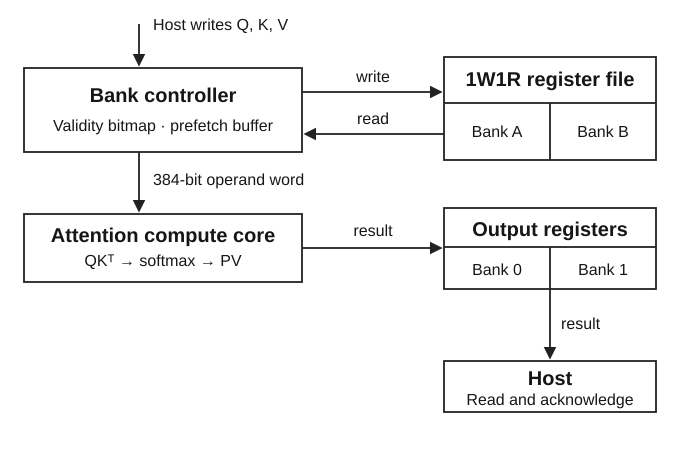
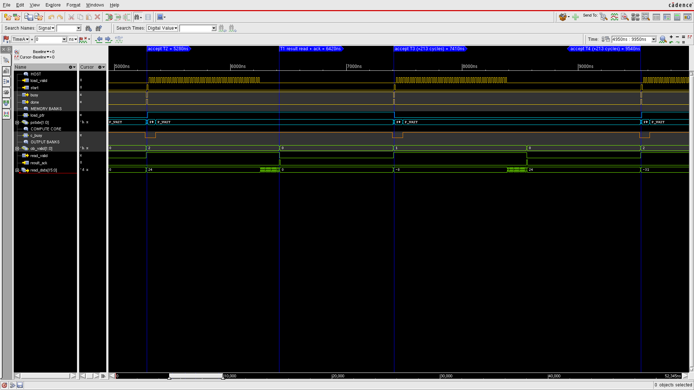

A memory-backed attention head
I designed and verified a fixed-point attention head for the Chips and AI Hackathon. It takes three 4 × 4 matrices of signed 8-bit operands and computes softmax(QKᵀ/√D) · V. I implemented it from RTL through GDSII using a commercial 40 nm CMOS PDK.
My first version with a compiled register file accepted a new task every 329 cycles. The earlier flip-flop design had needed only 269. To find where the extra time went, I traced a task from the first host write to the last result read.

Where the cycles went
One reciprocal per row
Normalizing the 4 × 4 attention matrix originally took 16 sequential divisions. I computed one reciprocal for each row and reused it across the row’s four entries, multiplying and rounding each product. This reduced the compute window from 577 to 205 cycles, measured from accepting the start signal to a result-ready indication. With the selected rounding rule, the largest output difference from the divider version was one output code.
Operand delivery and overlap between tasks
In the first memory-backed design, the controller prefetched Q, K and V, then spent another 48 cycles forwarding the operands to the core one element at a time. I changed the core to read the complete 384-bit prefetch word in parallel. That removed the internal feed. Four fewer control cycles brought the single-task latency from 265 to 213 cycles, with the arithmetic still taking 205.
The host also spent 48 cycles loading the next input and 16 cycles reading the previous result. I split the input storage into two banks so the host could load one while the controller prefetched from the other. Two output register banks let the host read one result while the core produced the next. An acknowledgement frees each output bank. When both are occupied, the accelerator waits before accepting another task.
Task interval and verification
| Timing window | Baseline | Optimized |
|---|---|---|
| Arithmetic core, start to done | 577 cycles | 205 cycles |
| One memory-backed task, accept to result | 265 cycles | 213 cycles |
| Memory-backed stream, successive task accepts | 329 cycles | 213 cycles |
The 116-cycle reduction in the stream interval combines 52 cycles saved within a task and 64 cycles of host I/O overlapped with computation. I checked the resulting 213-cycle interval in a stream of 24 tasks.

I checked the optimized design against its bit-accurate Python model using 216 distinct input vectors (16 directed and 200 random). The same vectors matched the model in RTL simulation and in gate-level simulation with post-route delays.
Physical implementation
I completed synthesis, placement, clock-tree synthesis and routing, then streamed out the GDSII and checked it by reading it back. At 100 MHz, the reported worst setup and hold slacks were +0.046 ns and +0.030 ns. These are post-route timing results. Physical verification covered the implementation tool’s checks; foundry sign-off DRC and LVS were outside the scope of the prototype.